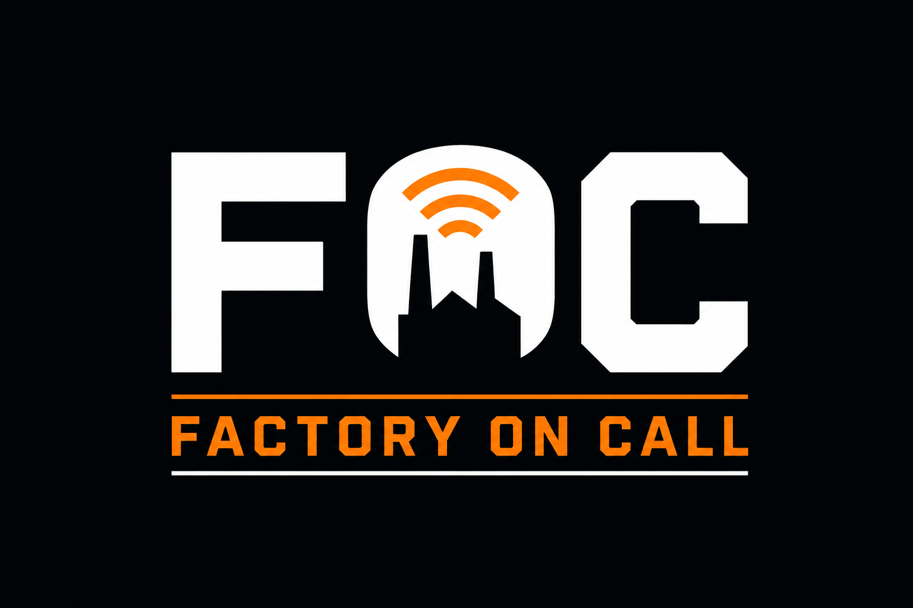

Get the right help moving faster.
Factory On Call gives production teams a clear way to call for support, acknowledge requests, track response, escalate emergencies, and keep everyone looking at the same live information.

From call to response.
A focused workflow that makes support requests visible from the moment they are raised until the call is closed.
System Preview
Screenshot placeholders are ready below. Send the final Factory On Call images and they can drop straight into these positions.
PLACEHOLDER
Supervisor Queue
See active calls, acknowledgement state, elapsed time, and response status in one place.
PLACEHOLDER
Interactive Viewer
Give floor teams a clear live view of calls and current response activity.
PLACEHOLDER
TV Display
Keep active support needs visible on shared production-floor screens.
PLACEHOLDER
Admin & Activity
Manage stations and users while retaining searchable call and response history.
Onboarding Walkthroughs
Choose the setup path that matches what you want to try.
Demo Workspace Setup
Create a Factory On Call demo workspace and explore the system before moving to production.
Production Workspace Setup
Register and set up a Factory On Call workspace for a production plant.
Simple Plant Pricing
Start with the demo, then move to full one-plant access when you are ready.
Demo
Explore the workflow and onboarding experience.
- Demo workspace
- Core workflow preview
- No commitment
One Plant Access
or $249.99/year
- One plant workspace
- Stations and users
- Live call visibility
- Acknowledgements and response tracking
- Emergency alerts
- Activity history
Multi-Plant / Custom
For larger deployments or custom workflow needs.
- Multiple plants
- Custom rollout discussion
- Priority support options
Make support calls impossible to miss.
Factory On Call gives the floor a simple way to request help and gives supervisors the visibility to respond faster.